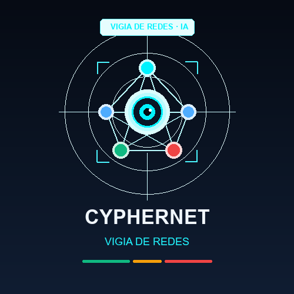

CypherNet:
Vigia de Redes
Como usar Inteligência Artificial e dados reais da Internet para detectar lentidão invisível e antecipar quedas de conexão antes que o usuário perceba.
Equipe: Beatriz Gonçalves · Breno Brasil · Enzo Moraes · Natsumi Goto · Pedro Viana · Vitória Alessandra

Por que a Internet trava antes de "cair" de vez?
Na maioria das vezes, uma rede não morre de repente — ela começa a dar sinais silenciosos chamados de Gray Failures (falhas cinzentas): pacotes oscilando e filas enchendo.
❌ O jeito antigo (Limites Fixos)
Sistemas tradicionais disparam alerta quando a latência (RTT) passa de um número fixo, como 100 ms.
- Rota local (2 ms): se subir para 40 ms, já está 20× pior e o alarme nem toca!
- Rota intercontinental (180 ms): está saudável, mas dispara falso alarme toda hora.
✅ A ideia do CypherNet (Por Rota)
Em vez de usar uma régua única para o planeta inteiro, o CypherNet aprende qual é o comportamento normal de cada rota.
- Analogia médica: febre de 38°C é igual para todos, mas pressão arterial ou batimento cardíaco depende do histórico de cada paciente.
- Comparamos o agora com o histórico da própria conexão.
Classificação em 3 Estados Operacionais
Inspirado na vigilância contínua, o CypherNet observa cada conexão e traduz métricas técnicas em três alertas claros para o operador:
Link Saudável
Latência, oscilação (jitter) e entrega de pacotes estão dentro do padrão histórico esperado para aquela rota específica.
Alerta Preventivo
Atraso moderado ou oscilação elevada persistiu por pelo menos 2 das últimas 5 medições (~20 min). Hora de agir antes da queda.
Indisponibilidade
Perda severa de pacotes (≥ 10%), timeouts repetidos ou disparo extremo de latência fora da curva normal da rota.
Telemetria Global do RIPE Atlas (msm_id = 9333345)
Não usamos dados inventados: coletamos medições reais da rede de sondas globais do RIPE Atlas (Anchoring Mesh), com disparos de 3 pacotes ICMP (ping) a cada 4 minutos.
Rotas únicas (probe|destino) distribuídas globalmente.
Medições reais rotuladas após 7 dias exclusivos de baseline.
Δt = 240s com leitura de RTT (min, avg, max) e perda.
Ordem cronológica estrita: Treino → Validação → Teste futuro.
Baseline Robusta & Engenharia de Atributos
1. Régua Histórica de 7 Dias (Mediana & MAD)
Usamos Mediana e MAD (Desvio Absoluto Mediano) em vez de média e desvio padrão para que picos isolados não contaminem o "normal" da rota.
Segredo técnico: em apagões (100% de perda), o RTT não existe (NaN). Nunca preenchemos com zero ou mediana para não mascarar uma queda como link normal!
2. O que entra no modelo (8 Base + 3 Tendência)
- Instantâneas (5): z_robusto, aumento_pct, jitter_relativo, perda_pct, timeout_atual.
- Memória Curta — Janela de 5 (~20 min): n5_timeout, n5_aumento80, n5_risco.
- Tendência Proativa T+1 (3): z_max5, z_tendencia5 (aceleração da fila) e perda_media5.
Por que escolhemos a Árvore de Decisão (max_depth = 7)?
Comparamos três famílias clássicas de Machine Learning. A Árvore de Decisão empatou em desempenho com os ensembles e venceu em transparência operacional.
Árvore de Decisão (CART)
- Caixa-Branca: gera 16 regras SE ... ENTÃO auditáveis pela equipe de redes.
- Ultra-leve: apenas 45,6 KB e resposta em ~0,2 ms.
- Gini + NaN nativo: trata timeouts sem gambiarra.
Random Forest
- 100 a 150 árvores votando em paralelo.
- Excelente estabilidade contra variância.
- Porém funciona como caixa-preta para auditoria rápida em NOC.
XGBoost
- Árvores treinadas em sequência corrigindo erros residuais anteriores.
- Ótimo poder preditivo, mas maior complexidade de ajuste e menor explicabilidade direta.
Diagnóstico Atual (T=0) vs. Previsão Proativa (T+1 = +4 min)
| Modo Operacional | Modelo | Accuracy | F1-Macro (Val) | F1-Macro (Teste) | Recall FALHA |
|---|---|---|---|---|---|
| T=0 · Agora | Árvore de Decisão (d=7, 16 folhas) | 100,00% | 0,9999 | 1,0000 | 100,00% |
| T=0 · Agora | Random Forest / XGBoost | 99,99% / 99,90% | 0,9996 / 0,9954 | 0,9997 / 0,9956 | 99,93% / 99,87% |
| T+1 · +4 min | Árvore Proativa (d=8, pesos 1:2:3) | 88,38% | 0,5782 | 0,5699 | 31,86% |
| T+1 · +4 min | Random Forest Proativo (d=10) | 88,80% | 0,5873 | 0,5824 | 33,85% |
Por que ~32%–34% de Recall no futuro (+4 min)? Quedas físicas súbitas não dão aviso prévio, mas ~1 em cada 3 falhas futuras nasce de degradação progressiva — e o CypherNet consegue antecipá-las 4 minutos antes (com z_max5 e z_tendencia5 somando 23,7% da decisão).
Como o CypherNet roda da Medição à Resposta da API
Ingestão
A medição chega via JSON (POST /api/previsoes ou API ao vivo do RIPE Atlas).
Baseline (csv)
Consulta a mediana, MAD e jitter típico daquela rota específica entre os 69 fluxos.
Janela Móvel
Calcula as features no módulo único (1,4826·MAD) e atualiza a fila das últimas 5 medições.
Inferência (<1 ms)
A Árvore em modelo.joblib (verificada por SHA-256) retorna T=0 e T+1.
Endpoints REST Disponíveis (Flask)
GET /api/saude → Liveness & SHA-256
GET /api/modelo → Metadados & parâmetros
POST /api/previsoes → Predição unitária ou em lote
GET /api/previsoes → Histórico recente da API
Pacote Canônico Reproduzível
Todo o sistema foi empacotado em Grupo05.zip (27,9 KB) contendo modelo.joblib, baseline.csv e metadados.json, validado com 0 divergências nas 173.674 linhas.
O que vamos testar ao vivo agora no Painel NOC
1. Operação Normal (OK)
Rota 6251|193.0.0.164 com RTT próximo à mediana (28,2 ms) e perda 0%. Confiança ~100% em OK.
2. Gray Failure (RISCO)
Elevamos o RTT moderadamente (~40% acima) por 2 ciclos seguidos. A janela n5_risco sobe e aciona o alerta preventivo RISCO.
3. Timeout & RIPE Ao Vivo (FALHA)
Perda de 100% mantém z_robusto = NaN e aciona FALHA; e o botão RIPE Atlas ao Vivo busca pings reais de agora!
Comando local do estande: python producao/app/server.py → http://127.0.0.1:5000
Teste o CypherNet e assista ao Pitch (90s)
Aponte a câmera para o QR Code ao lado para abrir a página interativa do projeto, explorar os diagramas da Árvore de Decisão e simular rotas em tempo real.
Grupo 05 · Estruturas de Dados II (2026)
Beatriz Gonçalves da Silva · Breno Brasil de Souza
Enzo Moraes Sousa · Natsumi Goto
Pedro Viana da Silva · Vitória Alessandra das Neves
https://beaacademico.github.io/ESTRUTURA-DE-DADOS-II-PROJ-1/feira/
Escaneie para abrir o CypherNet Showcase